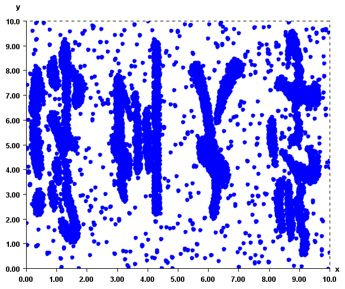
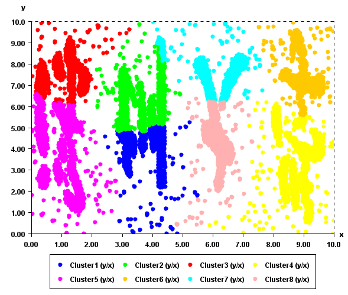

Clustering using the DPC Algorithm (SPMF documentation)
This example explains how to run the DPC algorithm using the SPMF open-source data mining library.
How to run this example?
- If you are using the graphical interface, (1)
choose the "DPC" algorithm, (2) select the input file "szu.txt",
(3) set the output file name (e.g. "output.txt")
(4) set dc =1, rhoMin = 150, and deltaMin = 1 and (5) click "Run
algorithm".
Note that there is also an optional parameter called "separator". It can be used to read other types of input files where values are not separated by spaces. For example, for a file separated by the ',' character, the parameter "separator" would have to be set to ",". - If you want to execute this example from the command line,
then execute this command:
java -jar spmf.jar run DPC szu.txt output.txt 1 150 1 in a folder containing spmf.jar and the example input file szu.txt. - If you are using the source code version of SPMF, launch the file "MainTestDPC_saveToFile.java" in the package ca.pfv.SPMF.tests.
What is DPC?
DPC (Density Peak Clustering) is a an algorithm to find clusters in data represented as vectors using the concept of "density peaks". The DPC algorithm is well-known and was publish in the Science journal.
This version follows the original implementation of DPC by drawing inspiration of the original MatLab code. It is to be note that while the original DPC paper claims that DPC is a parameter free algorithm, it is actually not true. In the original MatLab code of DPC, the user has to visually select a rectangle with the mouse. Thus, this algorithm has in reality three parameters called "dc", "rho_min" and "delta_min", which are also used in this implementation.
What is the input?
DPC takes as input (1) a set of instances having a name and containing one or more double values, and (2) the three parameters "dc" (double value), "rho_min" (integer value) and "delta_min"(double value). Please see paper about DPC for more details about the meaning of these parameters..
The input file format is is a text file containing several instances.
The first lines (optional) specify the name of the attributes used for describing the instances. In this example, two attributes will be used, named X and Y. But note that more than two attributes could be used. Each attribute is specified on a separated line by the keyword "@ATTRIBUTEDEF=", followed by the attribute name
Then, each instance is described by two lines. The first line (which is optional) contains the string "@NAME=" followed by the name of the instance. Then, the second line provides a list of double values separated by single spaces.
An example of input is provided in the file "szu.txt" of the SPMF distribution. It contains hundreds of instances, each described by two attributes:.
1.12 3.65
8.71 1.86
9.23 2.26
3.68 5.28
0.42 4.50
7.99 5.36
2.10 4.31
For example, the first instance is a vector with two values: 1.12 and 3.65 for the first and second attributes, respectively.
This input file represents a set of vectors that have two dimensions. But note that, it is possible to use more than two attributes to describe instances. To give a better idea of what the input file looks like, here is a visual representation:

The distance function used by DPC is the Euclidian distance.
What is the output?
DPCs groups vectors (points) in clusters based on density and distance between points.
Note that it is normal that DPC may generate a cluster having less than minPts (this happens if the neibhoors of a core points get "stolen" by another cluster).
Note also that DPC may eliminate points that are seen as noise (a point having less than minPts neighboors within a radius of epsilon)
By running DPC on the previous input file and minPts =100, we obtain the following output file containing 8 clusters. The output file looks like this:
@ATTRIBUTEDEF=Attribute0
@ATTRIBUTEDEF=Attribute1
[Series405 3.61 4.81][Series3944 3.6 4.81][Series3002 3.62 4.8] ...
[Series2595 3.67 4.88][Series7779 3.64 4.88][Series3146 3.68 4.86][Series3523 3.67 4.85] ...
.....
The output file format is defined as follows. The first few lines indicate the attribute names. Each attribute is specified on a separated line with the keyword "ATTRIBUTEDEF=" followed by the attribute name (a string).
Then, the list of clusters is indicated. Each cluster is specified on a separated line, listing the instances contained in the cluster. An instance is a name followed by a list of double values separated by " " and between the "[" and "]" characters.
The clusters found by the algorithm can be viewed visually using the "Cluster Viewer" provided in SPMF. If you are using the graphical interface of SPMF, select "Open output file using" the "Cluster Viewer" before pressing the "Run Algorithm" button. The result will be displayed in the Cluster Viewer, as follows:

As it can be seen in this example, the result can be more or less good. Points that are close to each other have put in the same clusters but some closers may be broken into separate parts. An interesting thing about DPC is that it can find clusters of various shapes.
Using an Extended Input File Format
Note that it is also possible to use an extended input file format where names can be given to the attributes and instances in the input file. In this case, the first lines (optional) specify the name of the attributes used for describing the instances. We will give an example with two attributes named X and Y. Each attribute is specified on a separated line by the keyword "@ATTRIBUTEDEF=", followed by the attribute name. Then, each instance is described by two lines. The first line (which is optional) contains the string "@NAME=" followed by the name of the instance. Then, the second line provides a list of double values separated by single spaces. An example of input using this extended format is provided in the file "inputDBScan2.txt" of the SPMF distribution. It contains 31 instances, each described by two attribute called X and Y, and the first lines look like this:
@ATTRIBUTEDEF=X
@ATTRIBUTEDEF=Y
@NAME=Instance1
1 1
@NAME=Instance2
0 1
@NAME=Instance3
1 0
@NAME=Instance4
11 12
...
Applying DPC to time series
Note that the DPC algorithm implementation in SPMF can also be applied to time series database such as the file contextSAX.txt in the SPMF distribution. To apply this algorithm to time series, it is necessary to set the "separator" parameter of this algorithm to "," since time series files separate values by "," instead of separating by spaces.
Where can I get more information about DPC?
DPC is a most famous data mining algorithm for clustering. It is described in almost all data mining books that focus on algorithms, and on many websites. The original article describing DPC is:
Rodriguez, A., & Laio, A. (2014). Clustering by fast search and find of density peaks. science, 344(6191), 1492-1496.